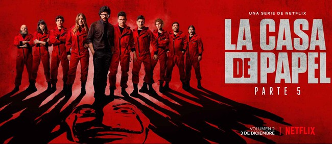
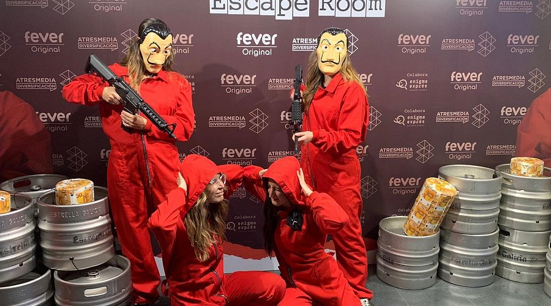
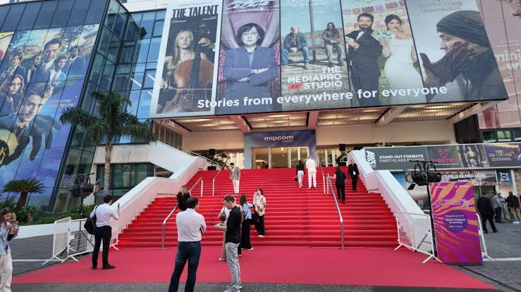

Datos e Impacto Cultural
La máscara de Dalí como símbolo político global
La máscara del pintor surrealista Salvador Dalí fue elegida por el equipo de producción por su carácter perturbador e icónico. Nadie imaginó que trascendería la ficción. Fue adoptada en protestas reales en todo el mundo: desde el movimiento Anonymous hasta manifestaciones en Chile (2019), Líbano, Irak e Irán. La serie convirtió un objeto de utilería en un ícono de resistencia que ningún departamento de marketing hubiera podido planificar.
Bella Ciao: el himno más escuchado en décadas
La canción partisana italiana Bella Ciao, originalmente del siglo XIX y símbolo de la resistencia antifascista durante la Segunda Guerra Mundial, fue incorporada a la serie como himno del grupo. Tras el estreno global en Netflix, la canción se colocó en las listas de éxitos de más de veinte países de forma simultánea. En Italia, el país de origen de la canción, alcanzó posiciones históricas en plataformas de streaming que nunca había tenido antes.
La serie en idioma no inglés más vista de Netflix
En abril de 2020, durante la pandemia global, la Parte 4 fue vista por más de 65 millones de hogares en sus primeros 28 días de estreno, estableciendo un récord histórico para el contenido en idioma no inglés en Netflix. Este dato transformó de manera permanente la estrategia de adquisición y producción de la plataforma para el contenido europeo, abriendo la puerta a inversiones masivas en series en español, alemán, francés y coreano.
El mono rojo: una decisión de arte calculada
El color rojo intenso del mono fue elegido deliberadamente para que la banda fuera reconocible ante las cámaras de televisión y los rehenes dentro del edificio. El equipo de dirección de arte realizó pruebas de color exhaustivas con distintos tonos y bajo distintas condiciones de iluminación. El objetivo era un rojo suficientemente saturado para destacar en cualquier plano, sin caer en lo cómico. El diseño final se convirtió en uno de los elementos visuales más reconocibles de la historia de la televisión española.
Antena 3 vendió la serie sin saber lo que tenía
Cuando la serie se estrenó en Antena 3 en mayo de 2017, los ratings iniciales fueron aceptables pero no extraordinarios. La cadena vendió los derechos internacionales a Netflix por una suma modesta. Fue la plataforma la que, al relanzarla globalmente en diciembre de 2017, la transformó en un fenómeno. El éxito retroactivo cambió la percepción de la industria española sobre el valor de su contenido para el mercado global y disparó una nueva era de coproducciones internacionales.
El Profesor: el personaje fue escrito para otro actor
Álvaro Morte, que interpreta a El Profesor, fue elegido para el papel después de que el actor originalmente considerado para el rol no pudiera comprometerse con el proyecto. Morte llevaba años trabajando en papeles secundarios en la televisión española y La Casa de Papel fue su primer rol protagónico de gran escala. Su interpretación fue tan definitoria para el personaje que resulta imposible imaginar al Profesor con otro rostro.
El impacto en el turismo de Madrid
Tras el éxito internacional de la serie, el turismo relacionado con las locaciones de rodaje creció de forma notable. El Banco de España, la Fábrica de Moneda y Timbre y el pueblo de Alpedrete comenzaron a recibir visitantes de todo el mundo en busca de los escenarios de la serie. La Comunidad de Madrid desarrolló rutas turísticas oficiales vinculadas a la producción.
Eventos
Eventos Relacionados

Estreno mundial de la Parte 5 — Netflix Tudum 2021
Septiembre 2021
Netflix organizó un evento global en línea llamado Tudum donde se presentó el tráiler oficial de la Parte 5 con presencia del elenco completo. El evento fue transmitido en vivo a través de YouTube con más de tres millones de espectadores simultáneos en su pico más alto.

Exposición La Casa de Papel Experience — Madrid
2022
Se realizó en Madrid una exposición inmersiva oficial dedicada a la serie, con recreaciones de los escenarios más icónicos, vestuario original del rodaje, utilería y contenido detrás de cámara. La muestra estuvo abierta durante varios meses y recibió miles de visitantes nacionales e internacionales.

Festival de Televisión de Cannes — MIPCOM
Octubre 2018
La Casa de Papel fue presentada en el MIPCOM de Cannes, el principal mercado mundial de contenido televisivo, como caso de estudio sobre el éxito global del contenido en idioma no inglés. El panel incluyó al creador Álex Pina y a representantes de Netflix Europa.